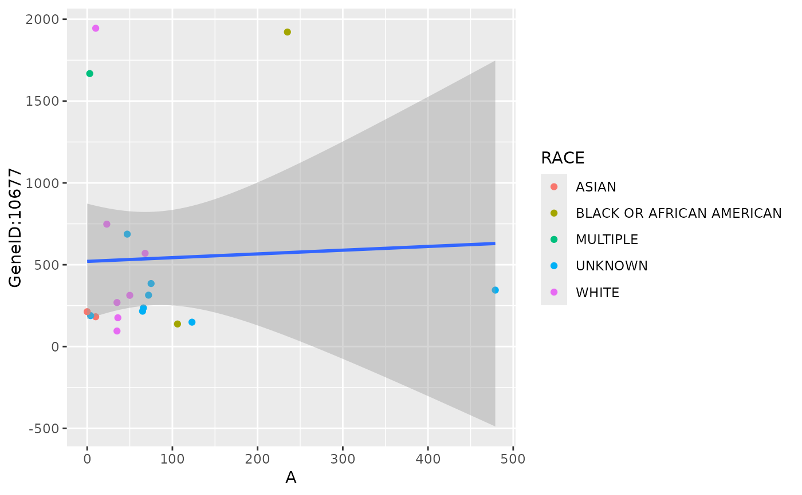
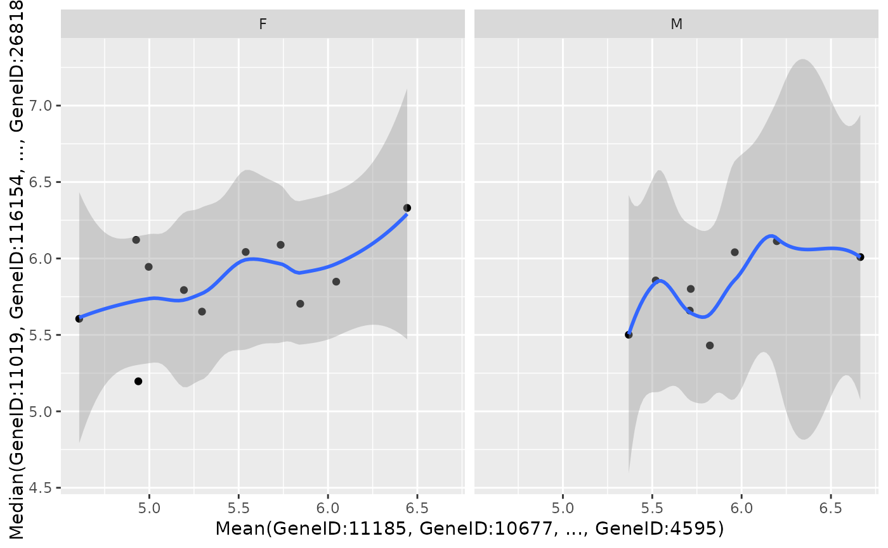

![[Experimental]](figures/lifecycle-experimental.svg)
This produces a scatterplot of two genes or gene signatures.
Usage
draw_scatterplot(
object,
assay_name,
x_spec,
y_spec,
color_var = NULL,
facet_var = NULL,
smooth_method = c("lm", "loess", "none")
)Arguments
- object
(
AnyHermesData)
input.- assay_name
(
string)
selects assay from input.- x_spec
(
GeneSpec)
gene specification for the x-axis.- y_spec
(
GeneSpec)
gene specification for the y-axis.- color_var
(
stringorNULL)
optional color variable, taken from input sample variables.- facet_var
(
stringorNULL)
optional faceting variable, taken from input sample variables.- smooth_method
(
string)
smoothing method to use, either linear regression line (lm), local polynomial regression (loess) ornone.
Examples
object <- hermes_data
g <- genes(object)
draw_scatterplot(
object,
assay_name = "counts",
facet_var = NULL,
x_spec = gene_spec(c(A = g[1])),
y_spec = gene_spec(g[2]),
color = "RACE"
)

object2 <- object %>%
add_quality_flags() %>%
filter() %>%
normalize()
g2 <- genes(object2)
draw_scatterplot(
object2,
assay_name = "tpm",
facet_var = "SEX",
x_spec = gene_spec(g2[1:10], colMeans, "Mean"),
y_spec = gene_spec(g2[11:20], colMedians, "Median"),
smooth_method = "loess"
)
